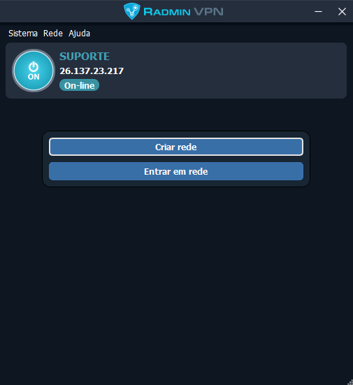
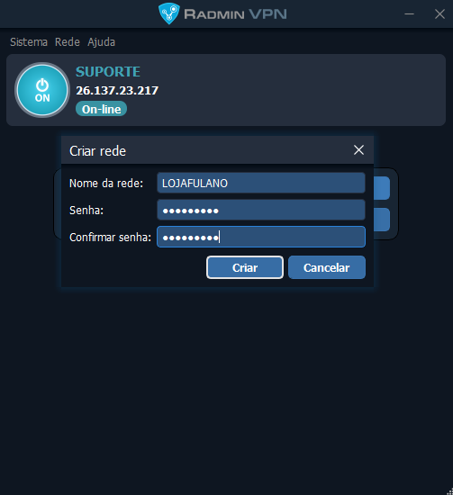
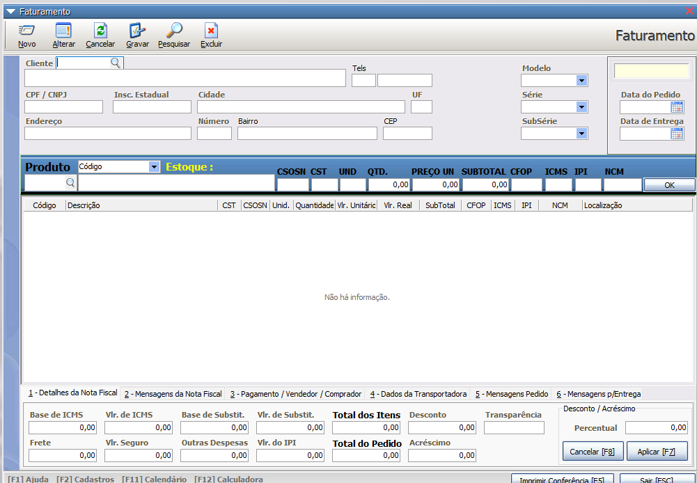

-
Como configurar o acesso TS?
Primeiro faça o downdoad do Radmin. Depois de instalado crie uma rede na opção "Criar Rede", defina um nome da rede e uma senha, por exemplo:
  www.radmin-vpn.com No computador terminal, instale o Radmin e entre na rede na opção "Entrar na rede" com os dados criado no servidor.:
-
Como faço para alterar minha senha?
Para alterar sua senha, vá até as configurações de conta, clique em "Alterar Senha" e siga as instruções. Aqui está um exemplo da tela de alteração de senha:

Veja o guia completo aqui. -
Como posso entrar em contato com o suporte?
Você pode entrar em contato com o suporte através do nosso chat online ou enviando um e-mail para suporte@exemplo.com. Veja uma imagem do nosso chat de suporte: